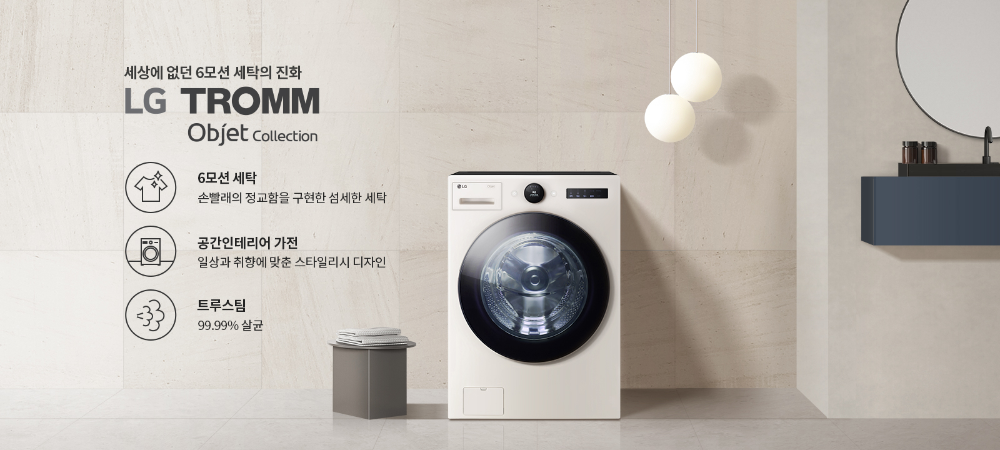
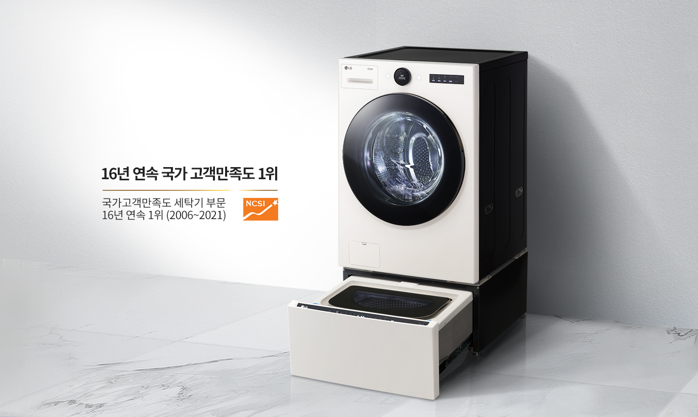

세탁 과학의 완성 LG TROMMThinQ 세탁기 - 6모션 세탁 : 손빨래의 정교함을 구현한 섬세한 세탁 - 공간 인테리어 가전 : 일상과 취향에 맞춘 스타일리시 디자인 - 트루스팀 : 99.99% 안심살균
오브제컬렉션 & 미니멀 플랫 디자인
공간을 빛내는
스타일리시 디자인
시선을 사로잡는 미니멀한 바디, 취향에 따라
공간에 맞춤하는 트렌디한 두 가지 컬러까지.
당신의 인테리어에 감각적인 멋을 더해줍니다.
공간에 맞춤하는 트렌디한 두 가지 컬러까지.
당신의 인테리어에 감각적인 멋을 더해줍니다.
-
* 초기 표시된 시간과 실제 동작 시간은 다를 수 있습니다.
* 인터텍 시험 결과, 섬세의류 3kg 오염도 적음 기준 인공지능세탁 코스 사용 시 표준 코스 대비 옷감 보호 15% 개선
* 인터텍 시험 결과, 일반 면섬유 3kg 오염도 많음 기준 인공지능세탁 코스 사용 시 표준 코스 대비 세탁성능 15% 향상
* 해당 성능은 실사용 환경에 따라 다를 수 있습니다.
* 의류 인식은 세탁량 6kg 이하에서 동작하며, 실사용 환경 및 세탁물 종류에 따라 다를 수 있습니다.
* 이해를 돕기 위한 이미지며, 실제와 다를 수 있습니다.
이지 서클 컨트롤
간편하게 돌리고
한눈에 보는 쉬운 세탁
복잡한 조작부를 한 화면에 담아
조작은 쉽고 디자인은 훨씬 간결해졌습니다.
다이얼을 돌려 원하는 코스를 손쉽게 설정하고
세탁 시간, 알림도 한눈에 확인할 수 있습니다.
조작은 쉽고 디자인은 훨씬 간결해졌습니다.
다이얼을 돌려 원하는 코스를 손쉽게 설정하고
세탁 시간, 알림도 한눈에 확인할 수 있습니다.
인공지능세탁 - 날씨 연동
취향부터 날씨까지
똑똑한 맞춤 케어
자주 사용하는 세탁 코스를 똑똑하게 기억하고
오늘 날씨는 어땠는지 세탁기가 알아서 파악해
최적의 맞춤 코스를 추천합니다.
오늘 날씨는 어땠는지 세탁기가 알아서 파악해
최적의 맞춤 코스를 추천합니다.
-
* 오염도에 따라서도 헹굼 횟수가 추가되어 최종 헹굼 횟수가 달라질 수 있습니다.
* 해당 기능 사용을 위해서는 스마트폰의 Google Play 스토어 또는 Apple App 스토어에서 'LG ThinQ' 앱을 설치하여 Wi-Fi에 연결해야 합니다. 자세한 사용 방법은 애플리케이션의 도움말을 참고해 주세요.
* LG ThinQ 앱은 일부 스마트폰에서는 기능 사용에 제약이 발생하거나 작동하지 않을 수 있으니, 최소 사양을 확인 후 사용하세요. (Android OS 7.0 이상, iOS 11.0 이상)
* 날씨 연동을 위해서는 사용 전에 반드시 LG ThinQ 앱을 통해 제품 등록을 해야합니다. LG ThinQ 앱의 AccuWeather의 날씨 정보 활용합니다.
* 인공지능세탁코스에서만 동작합니다.
스마트 페어링
세탁부터 건조까지
하나의 기기처럼
LG 트롬 건조기를 함께 사용 중이시라면
진행 중인 세탁 정보가 그대로 공유됩니다.
덕분에 따로 설정 없이도 세탁 코스에 맞게
최적의 건조 코스를 곧바로 진행할 수 있습니다.
진행 중인 세탁 정보가 그대로 공유됩니다.
덕분에 따로 설정 없이도 세탁 코스에 맞게
최적의 건조 코스를 곧바로 진행할 수 있습니다.

-
* 스마트 페어링 기능은 Wi-Fi 연결 및 LG ThinQ 앱에 제품 등록 후 사용할 수 있으며, Wi-Fi를 지원하는 LG 세탁기(드럼/통돌이)와 모두 페어링 가능합니다.
* 스마트 페어링 기능(건조기)은 일부 모델에서만 지원됩니다.
초강력 5방향 터보샷
물은 물론 시간까지
물은 물론 시간까지
절약하는 강력한 물살
상하좌우 5방향 터보샷+로 코스에 따라
세기와 방향을 자동 조절해 시간을 절약하고
물도 절약해
30분만에 세탁을 완료합니다.
세기와 방향을 자동 조절해 시간을 절약하고
물도 절약해
30분만에 세탁을 완료합니다.
-
* 5방향 터보샷이란? 좌우 4개의 분사 물살과 1개의 낙수 물살의 다양한 작용으로, 수압에 따라 물줄기의 분사 세기, 모양이 달라질 수 있고, 실 사용 환경과 행정 과정에 따라 터보샷 작동은 상이할 수 있습니다.
* 인터텍 시험 결과, 자사가 제시한 기준으로 북미 에너지 규격 시험 부하 3 kg, 표준 코스+터보샷 옵션 세탁 시 30분. 표준코스+터보샷 옵션 미적용 대비 물 사용양 30 %, 세탁 시간 24%가 절약되었습니다. (24kg 드럼세탁기 기준)
* 세탁 시간과 물 사용량은 사용 환경에 따라 차이가 있을 수 있습니다.


-
* 5방향 터보샷이란? 좌우 4개의 분사 물살과 1개의 낙수 물살의 다양한 작용으로, 수압에 따라 물줄기의 분사 세기, 모양이 달라질 수 있고, 실 사용 환경과 행정 과정에 따라 터보샷 작동은 상이할 수 있습니다.
* 인터텍(Intertek)시험 결과, 자사가 제시한 기준으로 북미 에너지 규격 시험 부하 3 kg, 표준 코스+터보샷 옵션 세탁 시 30분. 표준코스+터보샷 옵션 미적용 대비 물사용양 30 %, 세탁시간 24% 가 절약되었습니다.
* 세탁 시간과 물 사용량은 사용 환경에 따라 차이가 있을 수 있습니다.
-
* 전남대학교 산학협력단 시험 결과, 인플루엔자(H3N2), 인플루엔자(H1N1), 엔테로(PEV), 아데노(ICHV), 헤르페스(IBRV), 아데노(ICHV), 코로나(MHV), 코로나(PEDV) 바이러스를 30 cm x 30 cm KS포에 접종한 후 정격 용량 50 %와 함께 투입하여 알러지케어 코스 행정 시 99.99 % 제거함.
* PEDV와 MHV 바이러스는 코로나 바이러스의 일종으로 신종 코로나바이러스 19(COVID-19)에 대한 시험 결과가 아님.
* 상기 제거율은 실사용 조건에 따라 차이가 있을 수 있습니다.
* 영국 알러지 협회(BAF) 집먼지진드기, 개, 고양이, 꽃가루 알러젠 제거 인증(알러지 케어코스_트루스팀 적용 기준)
* 한국의과학연구원(KRIBS) 시험 결과, 시험편 표면에 유해세균(황색포도상구균, 녹농균, 폐렴간균)을 접종 후 국제 에너지 규격 시험 50 % 부하와 함께 알러지케어 코스 행정 시 99.99 % 살균됨.
* 살균 효과는 세균 종류 및 사용 환경에 따라 차이가 있을 수 있습니다.
* 국내최다 : 2020년 11월 국내판매 드럼세탁기 홈페이지 시험치 명시 기준(자사 14종=유해세균 3종+바이러스 7종+유해물질 4종)
* 이해를 돕기 위해 연출된 화면으로 실제와 다를 수 있습니다.
트루스팀 알러지케어코스
99.99% 살균으로
99.99% 살균으로
더 건강하게
집먼지진드기, 알러지 유발물질 제거는
물론
유해세균까지 99.99% 살균해주는
트루스팀 알러지케어코스로
걱정 없이
더 건강하게 세탁하세요.
물론
유해세균까지 99.99% 살균해주는
트루스팀 알러지케어코스로
걱정 없이
더 건강하게 세탁하세요.
-
* 전남대학교 산학협력단 시험 결과, 인플루엔자(H3N2), 인플루엔자(H1N1), 엔테로(PEV), 아데노(ICHV), 헤르페스(IBRV), 아데노(ICHV), 코로나(MHV), 코로나(PEDV) 바이러스를 30 cm x 30 cm KS포에 접종한 후 정격 용량 50 %와 함께 투입하여 알러지케어 코스 행정 시 99.99 % 제거함.
* PEDV와 MHV 바이러스는 코로나 바이러스의 일종으로 신종 코로나바이러스 19(COVID-19)에 대한 시험 결과가 아님.
* 상기 제거율은 실사용 조건에 따라 차이가 있을 수 있습니다.
* 영국 알러지 협회(BAF) 집먼지진드기, 개, 고양이, 꽃가루 알러젠 제거 인증(알러지 케어코스_트루스팀 적용 기준)
* 한국의과학연구원(KRIBS) 시험 결과, 시험편 표면에 유해세균(황색포도상구균, 녹농균, 폐렴간균)을 접종 후 국제 에너지 규격 시험 50 % 부하와 함께 알러지케어 코스 행정 시 99.99 % 살균됨.
* 살균 효과는 세균 종류 및 사용 환경에 따라 차이가 있을 수 있습니다.
* 국내최다 : 2020년 11월 국내판매 드럼세탁기 홈페이지 시험치 명시 기준(자사 14종=유해세균 3종+바이러스 7종+유해물질 4종)
* 이해를 돕기 위해 연출된 화면으로 실제와 다를 수 있습니다.
스테인리스 세탁통
안심을 더하는
안심을 더하는
청결한 내부 위생
옷감이 직접 닿는 세탁통을 스테인리스
소재로 적용해 내구성과 청결함을 모두 갖췄습니다.
통살균 코스로 내부 살균 및 청소도 간편합니다.
소재로 적용해 내구성과 청결함을 모두 갖췄습니다.
통살균 코스로 내부 살균 및 청소도 간편합니다.
-
* 스테인리스 재질 위생성 : 인터텍 시험 결과, 녹농균을 10cm x 10cm 크기의 시편에 접종한 후 최대 12일 간 배양 시 초기조건 대비 STS 재질에서 항균력 99%임.
* 항균효과는 사용 환경에 따라 차이가 있을 수 있습니다.
* 인터텍 시험 결과, 자사가 제시한 기준으로 내외통 각 3곳에 균을 배양한 미생물을 바른 후, 통살균 코스 시 황색포도상구균, 녹농균, 폐렴간균 99.9% 제거됨
* 살균 효과는 사용 환경에 따라 차이가 있을 수 있습니다.
-
* 스테인리스 재질 위생성 : 인터텍 시험 결과, 녹농균을 10cm x 10cm 크기의 시편에 접종한 후 최대 12일 간 배양 시 초기조건 대비 STS 재질에서 항균력 99%임.
* 항균효과는 사용 환경에 따라 차이가 있을 수 있습니다.
* 인터텍 시험 결과, 자사가 제시한 기준으로 내외통 각 3곳에 균을 배양한 미생물을 바른 후, 통살균 코스 시 황색포도상구균, 녹농균, 폐렴간균 99.9% 제거됨
* 살균 효과는 사용 환경에 따라 차이가 있을 수 있습니다.
-
* 글라스도어 내구성 : 인터텍 시험 결과, 자사의 기존 플라스틱 도어 비커스 경도12.2 Hv, 글라스도어 575.66 Hv로 수치가 높을수록 스크래치 내성 강함
* 글라스도어 모스 경도계 환산 시 5.5~6.5 사이
* 글라스도어 외부 재질에만 해당됨
글라스 도어
오래도록 아름답고
오래도록 아름답고
스크래치에 강한 도어
기존 플라스틱 도어와 달리
생활 스크래치에도 강합니다.
생활 스크래치에도 강합니다.
-
* 글라스도어 내구성 : 인터텍 시험 결과, 자사의 기존 플라스틱 도어 비커스 경도12.2 Hv, 글라스도어 575.66 Hv로 수치가 높을수록 스크래치 내성 강함
* 글라스도어 모스 경도계 환산 시 5.5~6.5 사이
* 글라스도어 외부 재질에만 해당됨
24kg 대용량 세탁
일주일 쌓인 빨래도
일주일 쌓인 빨래도
여유롭게
두껍고 부피가 큰 겨울 이불은 물론
평일 내내 가득 쌓인 빨래도 넉넉한 용량으로
한 번에 여유롭게 세탁하세요.
평일 내내 가득 쌓인 빨래도 넉넉한 용량으로
한 번에 여유롭게 세탁하세요.
LG ThinQ 앱
어디서든 무엇이든
바로바로
언제 어디서든 ThinQ 앱을 통해
원격으로 세탁을 시작하고
세탁 현황을 모니터링 할 수 있습니다.
원격으로 세탁을 시작하고
세탁 현황을 모니터링 할 수 있습니다.


-
* 해당 기능 사용을 위해서는 스마트폰의 Google Play 스토어 또는 Apple App 스토어에서 'LG ThinQ' 앱을 설치하여 Wi-Fi에 연결해야 합니다. 자세한 사용 방법은 애플리케이션의 도움말을 참고해 주세요.
* LG ThinQ 앱은 일부 스마트폰에서는 기능 사용에 제약이 발생하거나 작동하지 않을 수 있으니, 최소 사양을 확인 후 사용하세요. (Android OS 7.0 이상, iOS 11.0 이상)
-
- 원격제어
- 언제 어디서나 스마트폰 하나로 작동부터 실시간 모니터링까지 빠르게 할 수 있습니다.
-
- 다운로드 코스
- 우리집에 맞는 새로운 세탁 코스를 간편하게 찾아 다운로드 받을 수 있습니다.
-
* 모델마다 다운로드 코스는 상이할 수 있습니다.
* 다운로드 코스는 한 개 코스만 저장 가능하며, LG ThinQ 앱을 통해 코스를 변경할 수 있습니다.
-
- 에너지 모니터링
- 최근 사용 코스, 월별 에너지 사용량 등을 미리 체크하여 전기료를 아낄 수 있습니다.
-
- 통살균 코치
- 통살균 기능 사용 방법부터 사용 주기까지 한눈에 체크할 수 있습니다.
-
* 인터텍 시험 결과, 자사가 제시한 기준으로 내외통 각 3곳에 균을 배양한 미생물을 바른 후, 통살균 코스 시 황색포도상구균, 녹농균, 폐렴간균 99.9 % 제거됨.
* 살균 효과는 사용 환경에 따라 차이가 있을 수 있습니다.
-
- 스마트 진단(Wi-Fi)
- 발생한 문제를 빠르게 체크하고, 필요할 땐 고객센터로 바로 연결할 수 있습니다.
LG 트롬 트윈워시를
선택해야 하는 이유
소비자 만족 1등 트롬과 미니워시가 만나
위/아래 동시세탁은 기본,
세탁 공간은 넓게 사용해 보세요.
위/아래 동시세탁은 기본,
세탁 공간은 넓게 사용해 보세요.


-
* 제품 이미지 및 특장점 등에는 광고적 표현이 포함되어 실제 제품과 차이가 있을 수 있으며 제품 외관, 스펙 등은 제품 개량을 위해 사전 예고 없이 변경될 수 있습니다.
* 모든 제품 이미지는 촬영 컷으로 실제 제품과 차이가 있을 수 있으며, 제품 색상은 모니터 해상도, 밝기 설정 및 컴퓨터 사양에 따라 차이가 있을 수 있습니다.
* 해당 제품의 성능은 사용 환경에 따라 일부 상이할 수 있으며, 매장별로 취급 여부가 다를 수 있습니다.